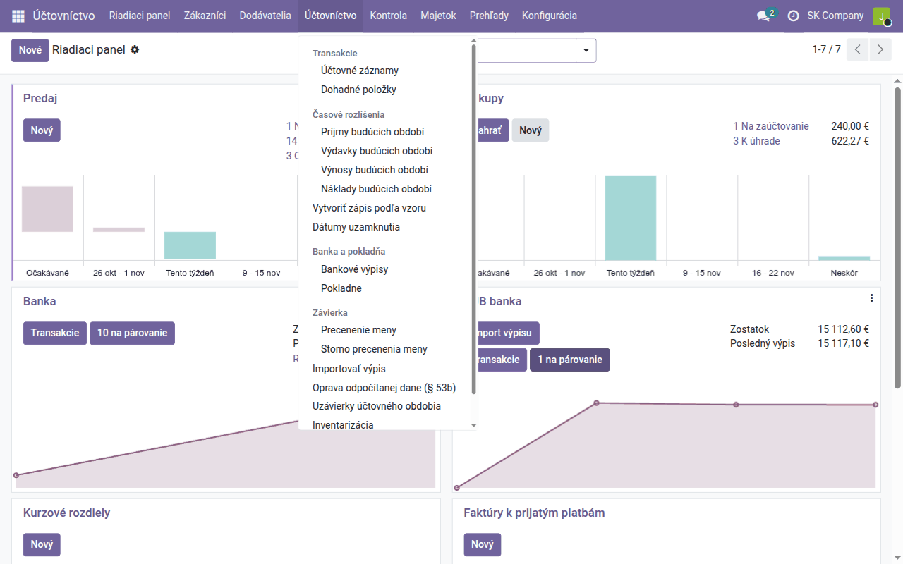
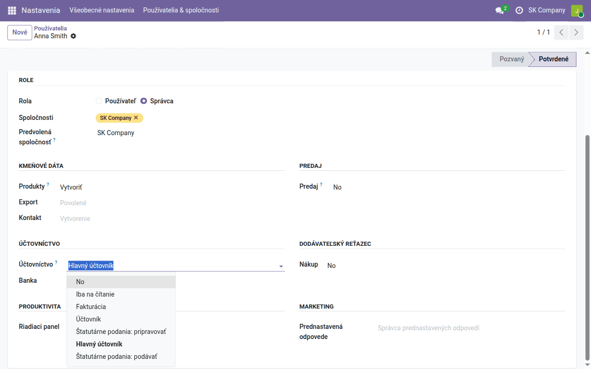
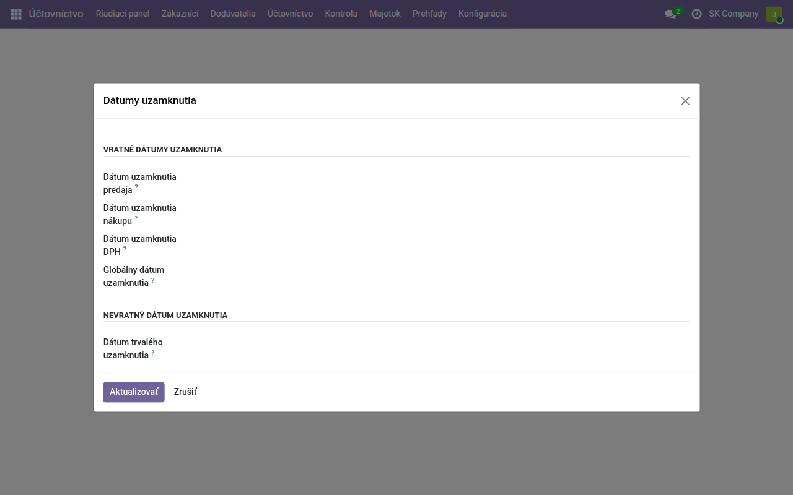

Návod k úlohe
Odoo pre slovenského účtovníka
Kde v Odoo nájdete to, čo poznáte zo slovenského účtovníctva — menu, roly používateľov a slovník od účtovného dokladu po saldokonto.
| Krajina | Slovensko |
|---|---|
| Edícia | Odoo Community |
| Zahŕňa | account, account_usability, account_lock_date_update, l10n_sk_datadance, l10n_cssk_internal_document, l10n_cssk_payment_symbols, l10n_cssk_partner_balances, l10n_sk_account_move_template, l10n_sk_account_cutoff, l10n_sk_fiscal_year_closing, l10n_sk_fs, account_reconcile_oca, account_asset_management, account_financial_report, l10n_cssk_account_financial_report, analytic |
Na čo slúži tento návod
Odoo vzniklo pre medzinárodné publikum a na obrazovkách používa vlastné pomenovania vecí, ktoré slovenský účtovník roky pozná pod inými menami. Nič podstatné nechýba — podvojné účtovníctvo podľa zákona o účtovníctve sa do Odoo prenáša bez problémov — ale cesta nie je na prvý pohľad zrejmá. Tento návod je mapa: kde sú menu, kto smie čo robiť a slovník od slovenského pojmu k obrazovke v Odoo. Ostatné návody k úlohám naň nadväzujú.
Opisuje Odoo Community so slovenskou lokalizáciou tak, ako beží na našom hostingu, a uvádza názvy tak, ako ich vidí používateľ so slovenským jazykom.
Aplikácia Účtovníctvo
Všetko, o čom tento návod hovorí, je v aplikácii Účtovníctvo. Jej menu:
| Menu | Čo v ňom nájdete |
|---|---|
| Zákazníci | vystavené faktúry (Faktúry), dobropisy, zálohové faktúry, prijaté platby, inkasné príkazy, odsúhlasenia zostatkov, zákazníkov |
| Dodávatelia | prijaté faktúry (Dodávateľské faktúry), prijaté dobropisy, prijaté zálohové faktúry, platby a platobné príkazy, dohody o započítaní, dodávateľov |
| Účtovníctvo | účtovné záznamy, časové rozlíšenie a dohadné položky, zápisy podľa vzoru, bankové výpisy (importované alebo zadané ručne) a pokladne, párovanie, dátumy uzamknutia, precenenie meny, uzávierku účtovného obdobia |
| Kontrola | všetky položky účtovnej knihy a auditnú stopu |
| Majetok | dlhodobý majetok a jeho odpisy |
| Prehľady | hlavnú knihu, predvahu, knihu denníka, otvorené položky; účtovnú závierku a daňové priznania; manažérske výkazy |
| Konfigurácia | nastavenia, účtový rozvrh, dane, účtovné denníky, fiškálne pozície, manažérske účtovníctvo, tabuľky CZ/SK lokalizácie a Návody |

Kto smie čo robiť
Čo používateľ vidí, určuje jeho rola v Účtovníctve (Nastavenia → Používatelia & spoločnosti → Používatelia, karta Prístupové oprávnenia):
| Rola | Môže |
|---|---|
| Fakturácia | vystavovať a prijímať faktúry a zadávať platby — bez účtovných záznamov a kníh |
| Iba na čítanie | vidieť celé účtovníctvo, nič nemeniť |
| Účtovník | zaúčtovať doklady a účtovné záznamy, párovať, spúšťať výkazy |
| Hlavný účtovník | všetko uvedené a navyše konfiguráciu: účtový rozvrh, dane, denníky, nastavenia |

Lokalizácia pridáva dve roly pre zákonné podania — Štatutárne podania: pripravovať a Štatutárne podania: podávať — aby podanie mohlo zostať u účtovníka, aj keď priznania pripravuje niekto iný.
Slovník
| Poznáte ako | V Odoo | Kde |
|---|---|---|
| účtovný doklad | účtovný záznam — každá faktúra, platba aj interný doklad je jeden záznam | Účtovníctvo → Účtovníctvo → Transakcie → Účtovné záznamy |
| účtovný zápis (riadok MD / D) | položka účtovnej knihy | Účtovníctvo → Kontrola → Riadenie → Položky účtovnej knihy |
| účtový rozvrh | Účtový rozvrh | Účtovníctvo → Konfigurácia → Účtovníctvo → Účtový rozvrh |
| syntetický / analytický účet | kód účtu: slovenský rozvrh má šesť číslic (604000); analytický účet je jednoducho ďalší kód (604001) | to isté |
| denník (chronologický) | výkaz Kniha denníka | Účtovníctvo → Prehľady → Účtovné výkazy OCA → Kniha denníka |
| kniha dokladov, číselný rad | účtovný denník: Predaj, Nákupy, Banka, Interné účtovné doklady… každý s vlastným číslovaním | Účtovníctvo → Konfigurácia → Účtovníctvo → Účtovné denníky |
| hlavná kniha | Hlavná kniha | Účtovníctvo → Prehľady → Účtovné výkazy OCA |
| obratová predvaha | Predvaha | to isté |
| saldokonto | Otvorené položky a Saldo podľa splatnosti | to isté |
| odsúhlasenie zostatkov | Odsúhlasenia zostatkov | Účtovníctvo → Zákazníci |
| zápočet | Dohody o započítaní | Účtovníctvo → Dodávatelia |
| párovanie úhrad | Párovať: riadky bankových výpisov a otvorené položky sa párujú navzájom | Účtovníctvo → Účtovníctvo → Párovať |
| interný doklad | účtovný záznam v denníku Interné účtovné doklady, vytlačený ako interný doklad | Účtovné záznamy → Nové; tlač cez ozubené koliesko ⚙ → Tlač → Interní / interný doklad |
| predkontácia | pri faktúrach účet na produkte alebo kategórii produktu, ktorý prestavia fiškálna pozícia (tuzemsko, EÚ, vývoz); pri interných dokladoch vzory zápisov | Konfigurácia → Účtovníctvo → Fiškálne pozície; Účtovníctvo → Účtovníctvo → Vytvoriť zápis podľa vzoru |
| zaúčtovať | Potvrdiť na faktúre, Zaúčtovať pri ostatných záznamoch; dovtedy je doklad Návrh | tlačidlo na doklade |
| storno | Dobropis pri faktúre; Stornovať pri inom zaúčtovanom zázname | tlačidlo na doklade |
| červené storno | nastavenie Storno účtovanie: storno zápornou sumou na tej istej strane | Konfigurácia → Nastavenia |
| dátum zdaniteľného plnenia | Dátum zdaniteľného plnenia na faktúre; Účtovný dátum je deň zaúčtovania | formulár faktúry |
| členenie DPH, riadky DP DPH | dane a ich daňové mriežky; každý riadok záznamu nesie svoje mriežky | Konfigurácia → Účtovníctvo → Dane; stĺpec Daňové mriežky v zázname |
| časové rozlíšenie | Časové rozlíšenia: príjmy, výdavky, výnosy a náklady budúcich období | Účtovníctvo → Účtovníctvo → Časové rozlíšenia |
| dohadné položky | Dohadné položky | Účtovníctvo → Účtovníctvo → Transakcie |
| dlhodobý majetok, odpisy | Majetok, odpisy cez Vypočítať majetok; daňové odpisy vo vlastných registroch | Účtovníctvo → Majetok; Prehľady |
| stredisko, zákazka | analytický účet — nie analytický účet účtového rozvrhu | Konfigurácia → Manažérske účtovníctvo → Analytické účty |
| uzávierka účtovného obdobia | Uzávierky účtovného obdobia (uzavretie tried 5 a 6, otvorenie nového roka) | Účtovníctvo → Účtovníctvo |
| účtovná závierka | Súvaha, Výkaz ziskov a strát a ďalšie výkazy | Účtovníctvo → Prehľady → Zákonné výkazy |
| VS, KS, ŠS | Variabilný / Konštantný / Špecifický symbol na faktúre | formulár faktúry |
| IČO, DIČ, IČ DPH | IČO, DIČ, IČ DPH | spoločnosť a každý partner |
| bankový výpis, pokladňa | Bankové výpisy, Pokladne | Účtovníctvo → Účtovníctvo → Banka a pokladňa |
Dve pasce, o ktorých je dobré vedieť:
- „Analytický účet" v Odoo nie je analytický účet účtovného rozvrhu. V slovenskom účtovníctve je analytický účet podúčet syntetického účtu (604001 pod 604). V Odoo je analytický účet stredisko alebo zákazka, sledované popri účtovom rozvrhu. Analytické účty v slovenskom zmysle zakladajte v účtovom rozvrhu.
- „Účtovný denník" v Odoo nie je denník podľa zákona. Účtovný denník v Odoo je kniha dokladov s vlastným číslovaním (vystavené faktúry, banka, interné doklady). Chronologický denník, ktorý vyžaduje zákon o účtovníctve, je výkaz naprieč všetkými — Kniha denníka.
Návrh, zaúčtované, zabezpečené
Doklad je Návrh, kým ho nezaúčtujete — faktúru tlačidlom Potvrdiť, ostatné záznamy tlačidlom Zaúčtovať; do kníh a daňových priznaní idú len zaúčtované záznamy. Zaúčtovaný záznam sa dá vrátiť do návrhu tlačidlom Obnoviť návrh, kým je obdobie otvorené; inak ho stornujete.
Účtovníctvo → Účtovníctvo → Závierka → Zabezpečiť záznamy zapečatí zaúčtované záznamy neprerušeným reťazcom hashov, takže každá neskoršia zmena sa dá zistiť. Obdobie tým neuzavriete — dokazuje to len, že účtovníctvo nikto nezmenil. Kým záznamy prvýkrát nezabezpečíte, je táto položka menu viditeľná len v režime vývojára.
Uzavretie obdobia
Uzavreté obdobie Odoo chráni dátumami uzamknutia: nič s dátumom do dátumu uzamknutia vrátane sa nedá zaúčtovať ani zmeniť. Nastavíte ich v Účtovníctvo → Účtovníctvo → Dátumy uzamknutia — smie to len rola Hlavný účtovník — a potvrdíte tlačidlom Aktualizovať:
| Dátum uzamknutia | Čo uzamkne |
|---|---|
| Dátum uzamknutia predaja | vystavené faktúry a ostatné záznamy predajných denníkov |
| Dátum uzamknutia nákupu | prijaté faktúry a ostatné záznamy nákupných denníkov |
| Dátum uzamknutia DPH | všetko, čo by zmenilo DPH obdobia — nastavte ho po podaní DP DPH a KV DPH |
| Globálny dátum uzamknutia | všetky záznamy |
| Dátum trvalého uzamknutia | všetky záznamy, a už sa nikdy nedá posunúť späť |

Dátum uzamknutia nemôže byť v budúcnosti. Prvé štyri sa dajú posunúť späť, ak sa ukáže potrebná oprava; trvalé uzamknutie si nechajte na rok, ktorého účtovná závierka je podaná. Podanie daňového priznania obdobie samo neuzamkne — dátum uzamknutia pre DPH nastavte po podaní.
Čo ďalej
- Ako nastaviť účty, aby sa doklady zaúčtovali samy: Nastavenie predkontácií.
- Doklady každého dňa a ich zaúčtovanie: Denná agenda.
- Manažérske výkazy: Manažérske výkazy v MIS Builder.
- Každý modul lokalizácie má vlastný návod v Účtovníctvo → Konfigurácia → Návody.